Das Fenster "Belegerfassen - Artikelreservierung bearbeiten" kann in der Belegerfassung nur geöffnet werden, wenn es sich um einen Artikel mit Reservierung handelt.
Verkauf
Bei folgenden Szenarien kann bzw. wird das Fenster geöffnet:
ü Belegstufe "2 - Auftrag"
Laut
Belegart (Register "Optionen") soll die Reservierung manuell erfolgt (Optionen
"Reservierung" auf "1 - manuell Aufteilung").
ü Belegstufe "3 -
Lieferschein"
Es soll mehr geliefert werden, wie im Kundenauftrag reserviert
werden konnte.
Beispiel
Von dem Artikel 10002 sind 10 Stück am Lager und 6 Stück sind bereits für andere Aufträge reserviert worden. Wenn nun ein Auftrag (z.B. Belegnummer "AB13-533") über 6 Stück geschrieben wird, dann können für diesen Auftrag nur 4 Stück reserviert werden (2 Stück bleiben offen). Wird nun versucht ein Lieferschein für den Auftrag "AB13-533" zu schreiben, dann können nur 4 Stück geliefert werden. Bei einer gewünschten Auslieferung von 6 Stück öffnet sich das Fenster "Belegerfassen - Artikelreservierung bearbeiten".
Einkauf
Bei folgenden Szenarien kann bzw. wird das Fenster geöffnet:
ü Belegstufe "6 -
Bestellung"
Laut Belegart (Register "Optionen") soll die Reservierung manuell
erfolgt (Optionen "Reservierung" auf "1 - manuell Aufteilung").
ü Belegstufe "7 -
L-Lieferschein"
Laut Belegart (Register "Optionen") soll die Reservierung
manuell erfolgt (Optionen "Reservierung" auf "1 - manuell Aufteilung") und es
wurde keine Bestellung erfasst, in welcher bereits die Reservierung vorgenommen
wurde.
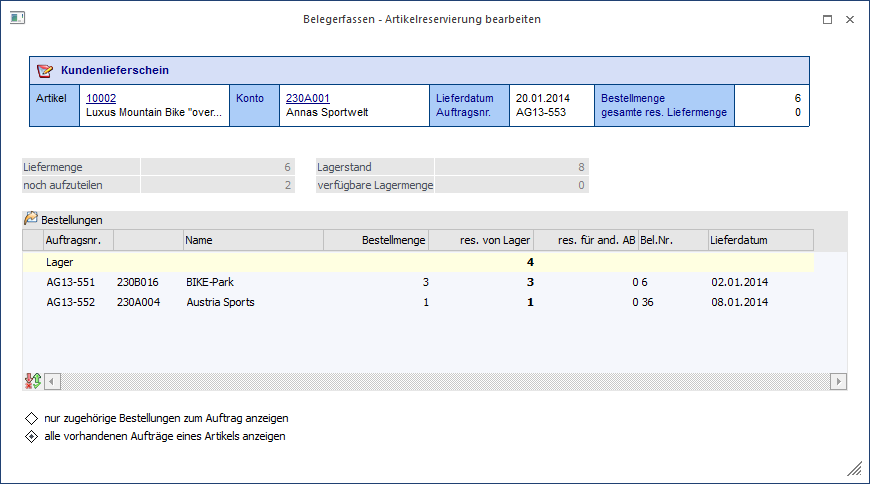
Das Fenster ist in die folgenden Bereiche untergliedert:
ü Belegdaten
ü Reservierungstabelle (hier getrennt nach Verkauf und Einkauf)
ü Optionen (hier getrennt nach Verkauf und Einkauf)
Belegdaten
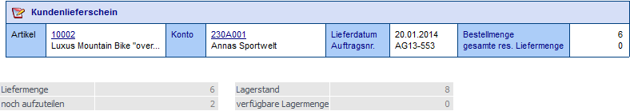
In diesem Informationsbereich werden die Daten vom Artikel in Bezug auf den aktuellen Beleg dargestellt.
Ø Liefermenge
Der Wert entspricht der (lt. aktuellem Beleg) zu liefernden Menge.
Ø noch aufzuteilen
An dieser Stelle wird angezeigt, welche Menge noch nicht aufgeteilt (reserviert) worden ist.
Ø Lagerstand
Dieser Wert entspricht dem aktuellen Lagerstand des Artikels.
Ø Verfügbare Lagermenge
An dieser Stelle wird die noch verfügbare (nicht reservierte) Menge angezeigt, welche sich am Lager befindet.
Reservierungstabelle - Verkauf
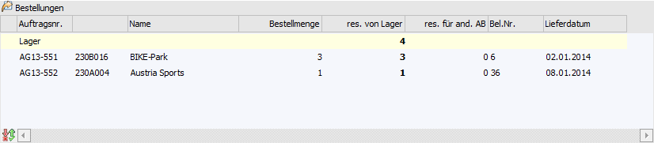
In der Tabelle können die Reservierungsmengen vom Lager bzw. von der Lieferantenbestellung für jeden Auftrag editiert werden. Wurde das Lieferdatum bereits überschritten, dann werden die Zeilen rot dargestellt.
Hinweis
Welche Aufträge / Bestellungen in der Tabelle angezeigt werden, kann über die Optionen (siehe Bereich "Optionen") gesteuert werden.
Ø Bestellmenge
Ausweisung der Bestellmenge des Auftrages (Verkauf) bzw. der Bestellung (Einkauf).
Ø res. von Lager (reserviert von Lager)
In dieser Spalte kann die Menge eingegeben werden, die vom Lager für diesen Auftrag reserviert wird.
Achtung
Um eine Lieferung durchführen zu können, muss die reservierte Menge auch am Lager vorhanden sein. D.h. wenn 4 Stück am Lager verfügbar sind und 2 Stück von einer offenen Bestellung reserviert wurden, dann können nicht 6 Stück geliefert werden.
Hinweis
Es kann nicht mehr reserviert werden, wie bestellt wurde (Spalte "Bestellmenge).
Ø res. für and. AB (reserviert für andere Aufträge)
Bei Bestellungszeilen wird hier die Menge angezeigt, welche für andere Aufträge reserviert worden ist.
Reservierungstabelle - Einkauf
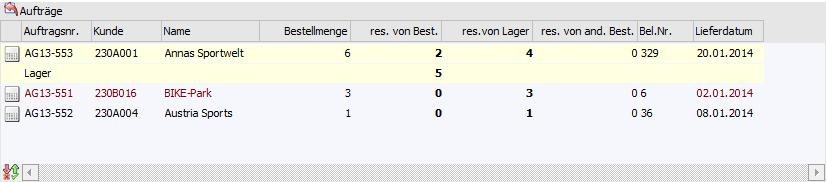
In der Tabelle können die Reservierungsmengen vom Lager bzw. von der Lieferantenbestellung für jeden Auftrag editiert werden. Wurde das Lieferdatum bereits überschritten, dann werden die Zeilen rot dargestellt.
Hinweis
Welche Aufträge / Bestellungen in der Tabelle angezeigt werden, kann über die Optionen (siehe Bereich "Optionen") gesteuert werden.
Ø Bestellmenge
Ausweisung der Bestellmenge des Auftrages (Verkauf) bzw. der Bestellung (Einkauf).
Ø res. von Best. (reserviert von Bestellung)
Es wird die Menge eingegeben, welche von der Bestellung, die aktuell erzeugt wird, für diesen Auftrag bzw. für das Lager reserviert wird.
Hinweis
Es kann nicht mehr reserviert werden, wie bestellt wurde (Spalte "Bestellmenge).
Ø res. von Lager (reserviert von Lager)
In dieser Spalte kann die Menge eingegeben werden, die vom Lager für diesen Auftrag reserviert wird.
Hinweis
Es kann nicht mehr reserviert werden, wie bestellt wurde (Spalte "Bestellmenge).
Ø res. von and. Best. (reserviert von anderen Bestellungen)
Bei Auftragszeilen wird hier die Menge angezeigt, welche von anderen Bestellungen reserviert worden ist.
Optionen - Verkauf
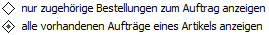
Ø nur zugehörige Bestellungen zum Auftrag anzeigen
Bei Aktivierung dieser Option werden neben dem Lager nur die Bestellungen angezeigt, von welchen für diesen Kundenauftrag Reservierungen vorgenommen wurden.
Ø alle vorhandenen Aufträge eines Artikels anzeigen
Bei Aktivierung dieser Option werden alle vorhanden Kundenaufträge des Artikels angezeigt, auch jene, für die keine Reservierung vorgenommen wurde.
Optionen - Einkauf
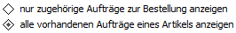
Ø nur zugehörige Aufträge zur Bestellung anzeigen
Bei Aktivierung dieser Option werden neben dem Lager nur die Kundenaufträge angezeigt, für welche eine Reservierung von der Bestellmenge durchgeführt wurde.
Ø alle vorhandenen Aufträge eines Artikels anzeigen
Bei Aktivierung dieser Option werden alle vorhanden Kundenaufträge des Artikels angezeigt, auch jene, für die keine Reservierung vorgenommen wurde.
Tabellenbuttons
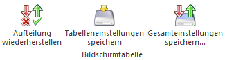
Ø Aufteilung wiederherstellen
Durch Anwahl dieses Buttons werden die Reservierungsmengen wieder auf den Ausgangspunkt zurückgesetzt.
Ø Tabelleneinstellungen speichern
Die Spalten einer Tabelle können grundsätzlich an beliebige Positionen verschoben, bzw. in der Breite entsprechend angepasst werden. Durch Anwahl des Buttons "Tabelleneinstellungen speichern" werden die Einstellungen benutzerspezifisch gespeichert und bei dem nächsten Aufruf des Programmpunktes wieder vorgeschlagen.
Ø Gesamteinstellungen speichern
Im Gegensatz zu "Tabelleneinstellungen speichern" können mit "Gesamteinstellungen speichern" mehrere Tabellenaufbauten gespeichert und nach Wunsch geladen werden. Zusätzlich werden Sonderfunktionen der Tabelle (z.B. "Spalte gruppieren") ebenfalls bei der Speicherung bedacht.
Buttons
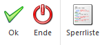
Ø Ok
Durch Anwahl des Buttons "Ok" bzw. der Taste F5 werden die Reservierungen gespeichert und das Fenster geschlossen.
Ø Ende
Durch Anwahl des Buttons "Ende" bzw. der Taste ESC wird das Fenster geschlossen.
Ø Sperrliste
Es wird eine Reservierungsliste für den aktuellen Beleg erzeugt.
Durchführungsbeispiel "Kundenlieferschein"
Wurde ein Kundenauftrag mit einem Reservierungsartikel geschrieben und wird dieser in der Stufe "3 - Lieferschein" aufgerufen, dann wird geprüft, ob für die Bestellmenge eine Reservierung erfolgte.
Hinweis
Wird ein Lieferschein erfasst, ohne dass zuvor ein Auftrag geschrieben wurde, so wird nicht geprüft ob die gelieferte Menge reserviert wurde!
Wurde die Liefermenge nicht reserviert, kann diese entweder
manuell erfolgen (durch editieren der Menge wird das Reservierungsfenster
geöffnet bzw. durch Drücken der Funktionstaste F8) oder es kann mit Hilfe des
Reservierungsicons  eine bereits
reservierte Menge übernommen werden.
eine bereits
reservierte Menge übernommen werden.
Beispiel manuelle Aufteilung
Für den Kunden 230A001 wurde ein Kundenauftrag über 6 Stück des Reservierungsartikels 10002 geschrieben, die Mengen jedoch nicht reserviert.
Dieser Kundenauftrag wird nun in der Stufe "3 - Lieferschein" aufgerufen.
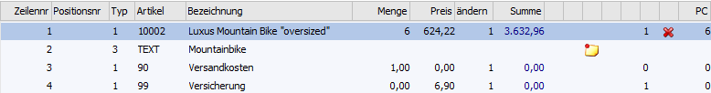
Nach Bestätigung der Menge, wird automatisch das Reservierungsfenster geöffnet:
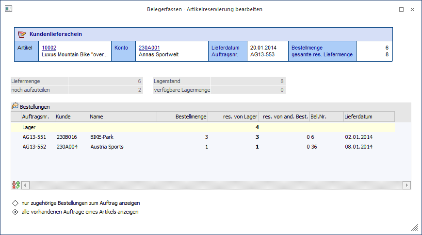
Hier muss nun die erforderliche Menge entweder von der reservierten Menge eines bereits bestehenden Kundenauftrages für diesen Artikel übernommen werden bzw. wenn die Menge auf Lager ist, vom Lager reserviert werden. In diesem Beispiel werden die 6 Stück vom Lager reserviert und die fehlenden 2 Stück vom Auftrag "AG13-551" geklaut:
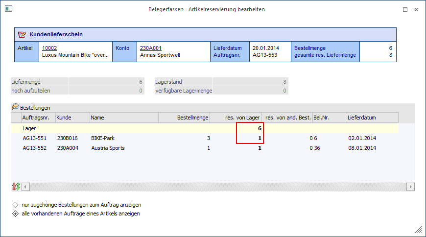
Nach Bestätigung mittel "Ok"-Button wird man wieder zurück in die Artikelerfassung geführt und der Kundenlieferschein kann gerechnet und / oder gedruckt werden.
Beispiel automatische Aufteilung
Für den Kunden 230A001 wurde ein Kundenauftrag über 6 Stück des Reservierungsartikels 10002 geschrieben, die Mengen jedoch nicht reserviert.
Dieser Kundenauftrag wird nun in der Stufe "3 - Lieferschein" aufgerufen.
Nach Drücken des Reservierungsicons wird in die Liefermenge entweder
ü die für den aktuellen Beleg reservierte Lagermenge übernommen
ü oder die für alle Belege reservierte Menge (höchstens aber die Bestellmenge des aktuellen Belegs)
übernommen. Damit verschwindet das Reservierungszeichen und der Beleg kann gedruckt werden.
Hinweis
Welche Menge übernommen wird, kann in dem Register "Optionen" der Belegerfassung definiert werden (siehe Kapitel Belegerfassen - Optionen).
Durchführungsbeispiel "Lieferantenbestellung und Lieferantenlieferschein"
Beim Erfassen von Lieferantenbestellungen bzw. Lieferantenlieferscheinen, wird das Aufteilungsfenster geöffnet, wenn laut Belegart (Register "Optionen") die Reservierung manuell erfolgen soll (Optionen "Reservierung" auf "1 - manuell Aufteilung").
Für den Lieferanten 330003 wurde eine Bestellung über 10 Stück des Reservierungsartikels 10002 geschrieben. Nach dem Bestätigen der Menge öffnet sich das Reservierungsfenster, in welchem die Bestellmenge zunächst dem Lager zugeordnet wird.
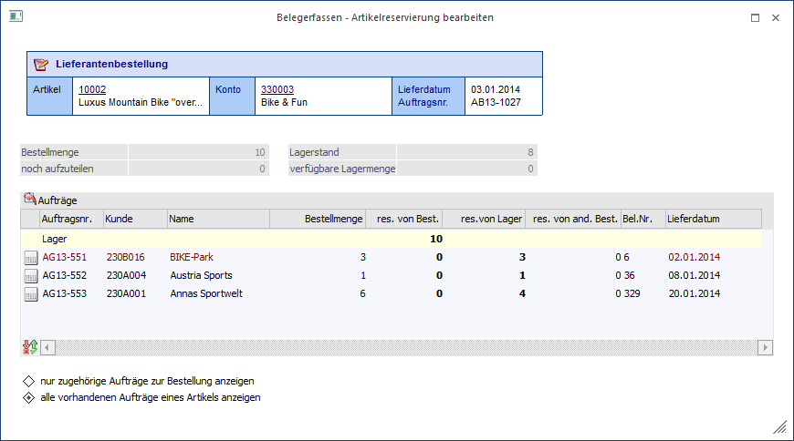
Da die Menge des Kundenauftrags "AG13-553" noch nicht vollständig reserviert wurde, wird die Lagerreservierung auf 8 Stück reduziert und die offenen 2 Stück dem Auftrag zugeordnet.
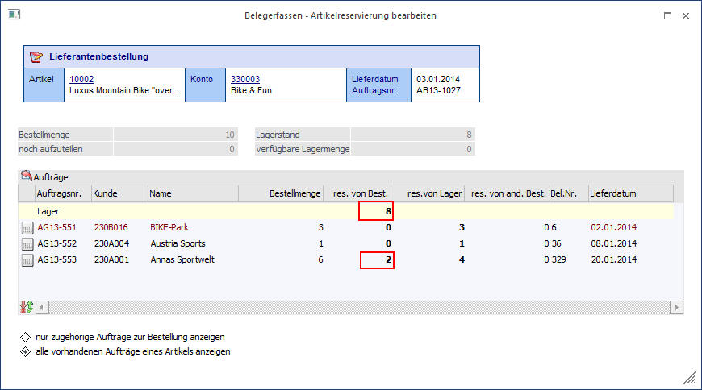